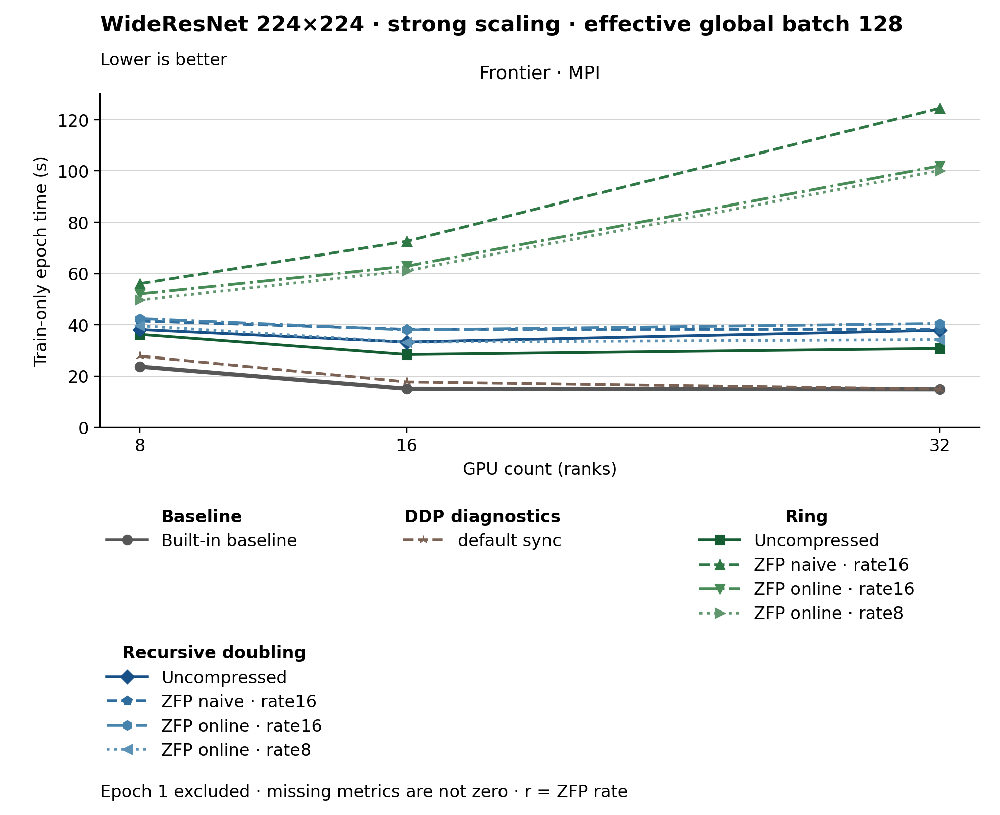

The figure uses lines. Methods use colors, line styles and markers. The metric is Train-only epoch time (s). Frontier · MPI, GPU count (ranks) 8: Built-in baseline has the lowest plotted value, 23.670. Frontier · MPI, GPU count (ranks) 16: Built-in baseline has the lowest plotted value, 15.000. Frontier · MPI, GPU count (ranks) 32: Built-in baseline has the lowest plotted value, 14.770. Epoch 1 is excluded. Values are medians; when repeated runs are available the selected repeat policy is median. These are not confidence intervals across repeated jobs. Missing or unrecorded metrics are omitted, not set to zero.
| Panel | GPU count (ranks) | Method | Value | Runs |
|---|---|---|---|---|
| Frontier · MPI | 16 | none | 15.0 | 1 |
| Frontier · MPI | 16 | default_sync | 17.69 | 1 |
| Frontier · MPI | 16 | ring | 28.36 | 1 |
| Frontier · MPI | 16 | ring_zfp_naive:16 | 72.54 | 1 |
| Frontier · MPI | 16 | ring_zfp_online_coll:16 | 62.87 | 1 |
| Frontier · MPI | 16 | ring_zfp_online_coll:8 | 61.11 | 1 |
| Frontier · MPI | 16 | recursive_doubling | 33.22 | 1 |
| Frontier · MPI | 16 | recursive_doubling_zfp_naive:16 | 38.22 | 1 |
| Frontier · MPI | 16 | recursive_doubling_zfp_online_coll:16 | 37.97 | 1 |
| Frontier · MPI | 16 | recursive_doubling_zfp_online_coll:8 | 33.17 | 1 |
| Frontier · MPI | 32 | none | 14.77 | 1 |
| Frontier · MPI | 32 | default_sync | 14.9 | 1 |
| Frontier · MPI | 32 | ring | 30.71 | 1 |
| Frontier · MPI | 32 | ring_zfp_naive:16 | 124.51 | 1 |
| Frontier · MPI | 32 | ring_zfp_online_coll:16 | 102.0 | 1 |
| Frontier · MPI | 32 | ring_zfp_online_coll:8 | 100.16 | 1 |
| Frontier · MPI | 32 | recursive_doubling | 37.85 | 1 |
| Frontier · MPI | 32 | recursive_doubling_zfp_naive:16 | 38.22 | 1 |
| Frontier · MPI | 32 | recursive_doubling_zfp_online_coll:16 | 40.5 | 1 |
| Frontier · MPI | 32 | recursive_doubling_zfp_online_coll:8 | 34.18 | 1 |
| Frontier · MPI | 8 | none | 23.67 | 1 |
| Frontier · MPI | 8 | default_sync | 27.76 | 1 |
| Frontier · MPI | 8 | ring | 36.24 | 1 |
| Frontier · MPI | 8 | ring_zfp_naive:16 | 56.04 | 1 |
| Frontier · MPI | 8 | ring_zfp_online_coll:16 | 52.0 | 1 |
| Frontier · MPI | 8 | ring_zfp_online_coll:8 | 49.59 | 1 |
| Frontier · MPI | 8 | recursive_doubling | 38.13 | 1 |
| Frontier · MPI | 8 | recursive_doubling_zfp_naive:16 | 41.49 | 1 |
| Frontier · MPI | 8 | recursive_doubling_zfp_online_coll:16 | 42.48 | 1 |
| Frontier · MPI | 8 | recursive_doubling_zfp_online_coll:8 | 39.62 | 1 |